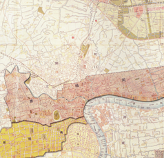
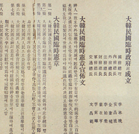

주제 큐레이션
전체 25건
-
 도시는 바뀌어도 나라는 있다 임정의 여정, 상하이에서 충칭까지 1919년 4월, 대한민국임시정부는 중국 상하이에 첫 발을 내디뎠다. 망명이라는 이름의 독립운동은 그저 피신이나 은신이 아니었다. 전 세계 열강과 일본 제국주의를 마주한 채, 어디에도 존재를 공인받지 못한 '나라'를 12345678901234567890 -
 망명정부의 법과 질서 임시헌장과 그 너머 1919년 4월, 대한민국임시정부는 중국 상하이에 첫 발을 내디뎠다. 망명이라는 이름의 독립운동은 그저 피신이나 은신이 아니었다. 전 세계 열강과 일본 제국주의를 마주한 채, 어디에도 존재를 공인받지 못한 '나라'를 12345678901234567890 -
독립은 공짜가 아니었다 후원과 모금의 기록들 1919년 4월, 대한민국임시정부는 중국 상하이에 첫 발을 내디뎠다. 망명이라는 이름의 독립운동은 그저 피신이나 은신이 아니었다. 전 세계 열강과 일본 제국주의를 마주한 채, 어디에도 존재를 공인받지 못한 '나라'를 12345678901234567890 -
총을 든 임정 한국광복군의 탄생과 작전 보고 1919년 4월, 대한민국임시정부는 중국 상하이에 첫 발을 내디뎠다. 망명이라는 이름의 독립운동은 그저 피신이나 은신이 아니었다. 전 세계 열강과 일본 제국주의를 마주한 채, 어디에도 존재를 공인받지 못한 '나라'를 12345678901234567890